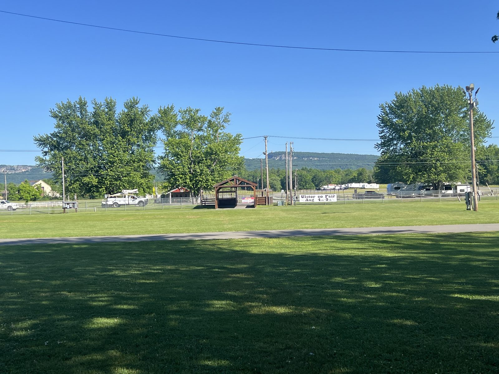
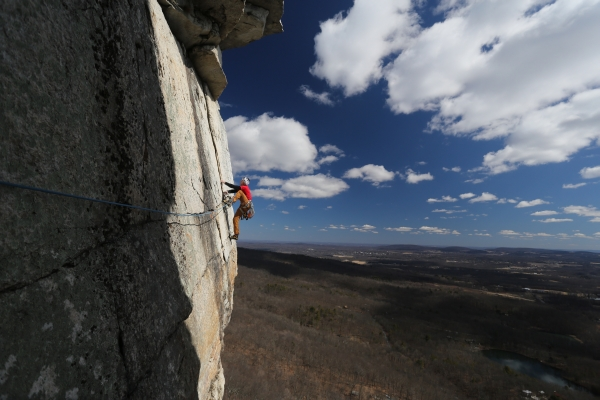

Presented by the Gunks Climbers Coalition & Mohonk Preserve
GunksFest V (2026)
The fifth annual celebration of climbing, stewardship, and community in the Shawangunks.
October 9–12, 2026
What is GunksFest?
GunksFest is the annual festival of the Gunks Climbers Coalition — an education-first gathering in the Shawangunks built around climbing clinics and workshops led by experienced local guides.
Clinics & Workshops
Self-rescue, anchor building, lead climbing, multipitch strategy, and more — taught by seasoned Gunks guides. See the full clinic schedule.
Evening Program
Two nights of adventure films, plus guest speakers, panels, and a vendor village of gear makers and local makers.
Camping
New for 2026 — four days of camping on site at basecamp, minutes from our climbing area.
Presented in Partnership
GunksFest is organized by the Gunks Climbers Coalition, in partnership with the Mohonk Preserve.
New Year, New Home
This year the festival spreads out across the valley.
Ulster County Fairgrounds
Basecamp

Camping, vendors, and home base for the weekend — with flush toilets, hot showers, and covered pavilion space. A short 15-minute drive from the cliff, and an even shorter one into New Paltz.
Mohonk Preserve
On the Rock

Daytime climbing clinics and workshops in the heart of the Gunks cliffs.
Stay & Play
Tickets are on sale. Our all-access pass puts you on the grounds for the whole festival — car or tent camping, the film festival, vendor village, and speakers all included — and there are weekend, day and film-only tickets as well.
All-Access Pass
$250
- Camp with us Friday, October 9th through Monday, October 12th at the Ulster County Fairgrounds ($120 value)
- A four-day pass to the iconic Mohonk Preserve, with climbing privileges as a non-member ($100 value)
- Over a dozen clinics to choose from across Saturday, Sunday, and Monday daytime programming, plus access to even more premium clinics
- Round-trip bus transit to the cliff and back from the Fairgrounds ($50 value)
- Our full evening program — film festival, vendor village, and guest speaker and panelist presentations
- RV hookups available for an additional fee
Volunteers get a discount. Sign up before you buy.
Other ways in
Weekend passes, single-day passes and film-only tickets are all on our ticket shop.
Clinics are added during checkout, on top of whichever ticket you pick — browse the line-up first if you want to plan your days.
Volunteer
GunksFest runs on volunteers. A few hours of work, a discount on your pass.
Evening Program
Two nights of adventure films, headlined by the local premiere of The Queen Swing. Plus speakers, panels, vendors, contests, and prizes.
Basecamp is the Ulster County Fairgrounds, fifteen minutes from the cliff and ten from New Paltz. Full evening details, venues and all, posted in September.
- Two nights of films
- Guest speakers & panels
- Vendor village
- Contests with prizes
Stay in the Loop
Tickets are on sale, and clinics are still being added to the line-up. Email us and we'll tell you as new ones land.
Email Us for UpdatesOr follow along on Instagram